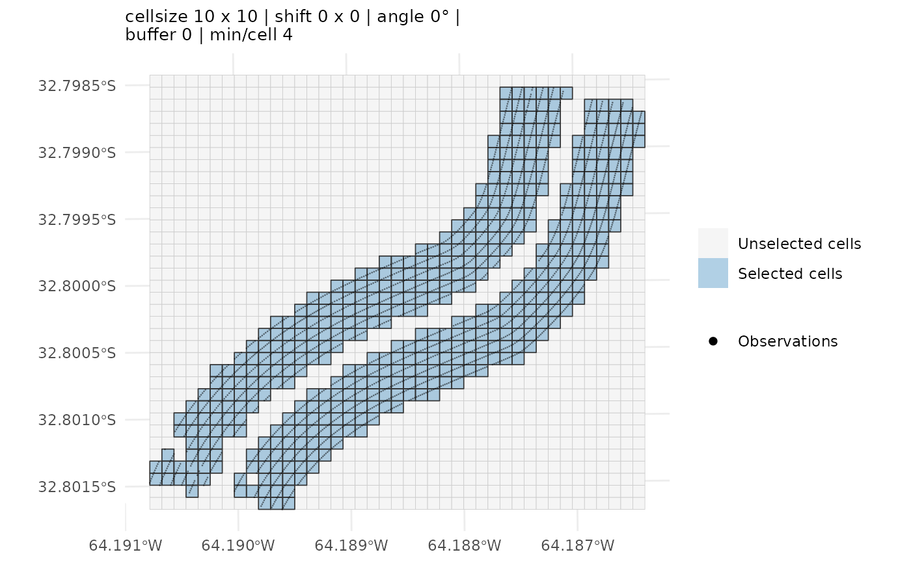

Analyzes unreplicated on-farm experiments to support field-specific inference about treatment effects. Spatial statistical methods are combined with permutation tests to compare the means of two or more treatments.
Arguments
- data
An `sf` object containing point geometries and the response and treatment columns specified in `y` and `x`.
- y
response column (numeric).
- x
treatment column (factor/character).
- cellsize, shift, angle_deg, buffer, min_per_cell
grid settings (used when `grid` is NULL).
- n_p
number of permutations per ANOVA run.
- n_s
number of sampling runs.
- alpha
significance threshold for letters.
- p_adjust_method
p-value adjustment method across pairwise comparisons. The adjustment is applied *within each sampling run*, across the `choose(k, 2)` comparisons of that run; the reported `p_adj` is the median of those per-run adjusted values (see Details).
- crs
optional target projected CRS if `data` is in lon/lat.
- keep_components
What spatial components to embed in the result. One of:
- `"none"` (default)
Nothing spatial is stored. Smallest object, but [plot_grid_selection()] and [plot.ofemt_result()] cannot be used on it.
- `"light"`
Adds `grid`: the complete `ofe_grid` object used for the analysis (`grid_all`, `grid_sel`, `cell_stats`, `params`). Enough to redraw the full grid and the selected cells, but the observations themselves are *not* stored, so no points can be overlaid.
- `"full"`
Everything in `"light"`, plus `cell_medians` (one point per selected cell carrying the per-cell median response, its treatment and the ANOVA residual used for the spatial diagnostics) and `points_joined` (every observation that fell inside a selected cell, with its `CellID`). This is the option that lets `plot()` overlay the raw points on the grid, which is the useful view when tuning `shift`, `angle_deg`, `buffer` or `cellsize`.
Roughly, `"light"` costs one polygon per grid cell and `"full"` adds one row per observation.
- grid
optional: an `ofe_grid` (e.g., from [make_ofe_grid()]). If `NULL`, the grid is generated internally using `cellsize`, `min_per_cell`, `shift`, `angle_deg` and `buffer`, and an informative message is emitted.
- seed
integer; controls reproducibility of the permutation sampling (the grid itself is deterministic from its construction arguments). Set `seed = NULL` to let results vary across runs.
Value
An object of class `ofemt_result`: a list with
- `General information`
One-row data frame with the cell size, the number of cells in the full grid and in the selection, the min/median/max number of observations per selected cell, the number of cells entering the analysis (`n`), the effective sample size (`ESS`), the spatial autocorrelation estimate (`Rho`) and Moran's *I*.
- `Cells per treatment`
`table` of selected cells per treatment.
- `ANOVA permutation test`
One row per pairwise comparison, with the median p-value across runs (`p_value`) and its multiplicity-adjusted counterpart (`p_adj`).
- `Means comparison`
One row per treatment, sorted by decreasing median response, with the compact letter display.
- `perm_runs`
The raw per-run output: `n_s * choose(k, 2)` rows with columns `Trt_1`, `Trt_2`, `Comparison`, `p_value` (the permutation p-value of that comparison in that run), `p_adj` (the same value after adjusting within the run) and `run` (run index, `1:n_s`). This is the empirical p-value distribution the method is built on; it is what [plot_pvalue_hist()] draws and what you would use to inspect the run-to-run variability behind the reported medians.
- `params`
The settings actually used (grid geometry, `n_p`, `n_s`, `alpha`, `p_adjust_method`, `seed`, and `grid_source`, which records whether the grid was supplied or built internally).
- `grid`, `cell_medians`, `points_joined`
Optional spatial components; see `keep_components`.
Details
The OFE-mean test accounts for spatial dependence when comparing treatments in unreplicated on-farm experiments. The procedure involves:
Aggregating the georeferenced observations within grid cells.
Estimating the spatial autocorrelation of the treatment-adjusted residuals.
Calculating the effective sample size (ESS) from the estimated spatial dependence.
Drawing repeated balanced subsamples whose size is determined by the ESS.
Performing pairwise permutation analysis of variance tests for each subsample.
Generating an empirical distribution of p-values for each treatment comparison.
The median of each empirical p-value distribution is reported as the p-value associated with the null hypothesis of no treatment effect.
For experiments with more than two treatments, all pairwise treatment comparisons are performed.
Multiplicity adjustment
When `p_adjust_method != "none"`, multiplicity adjustment is performed separately within each sampling run. [stats::p.adjust()] is applied to the `choose(k, 2)` pairwise p-values obtained in that run, where `k` is the number of treatments. The reported adjusted p-value is the median of the resulting empirical distribution of adjusted p-values.
The `p_adj` column in `perm_runs` contains the adjusted p-value from each sampling run. Therefore, [plot_pvalue_hist()] displays the empirical distribution used to calculate the reported median.
Compact letter display
Treatments are ordered by decreasing response before the compact letter display is generated. Treatments that do not share a letter are considered significantly different at the significance level specified by `alpha`. Treatment labels are internally recoded before calling [multcompView::multcompLetters()] and subsequently restored. Consequently, labels containing spaces or special characters are preserved in the results.
References
Córdoba, M., Paccioretti, P. and Balzarini, M. (2025). A new method to compare treatments in unreplicated on-farm experimentation. Precision Agriculture, 26, Article 4. doi:10.1007/s11119-024-10206-0
Examples
# \donttest{
res <- ofemt(ofe_f2, y = "Yield_tn", x = "Treatment",
cellsize = 10, min_per_cell = 4, alpha = 0.05)
#> `grid` not provided: building one internally via `make_ofe_grid()`. Pass a pre-built `ofe_grid` to inspect or reuse the selection.
# Keep the geometries to inspect how the grid lands on the points
res <- ofemt(ofe_f2, y = "Yield_tn", x = "Treatment",
cellsize = 10, min_per_cell = 4,
keep_components = "full")
#> `grid` not provided: building one internally via `make_ofe_grid()`. Pass a pre-built `ofe_grid` to inspect or reuse the selection.
plot(res)

# }